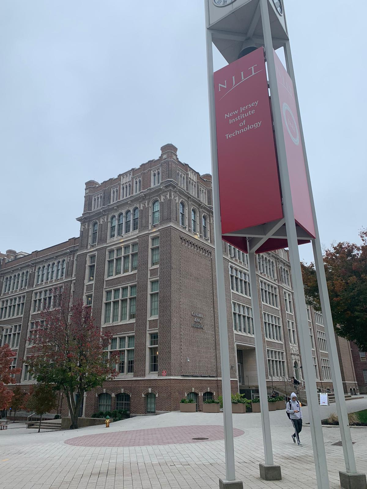
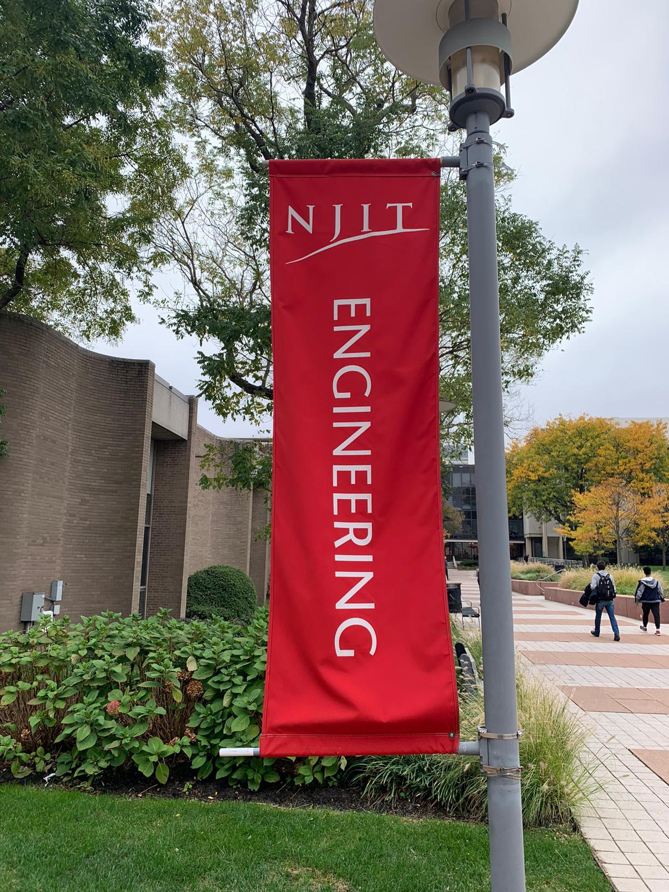
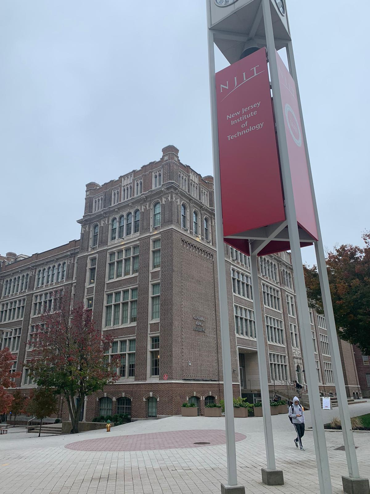
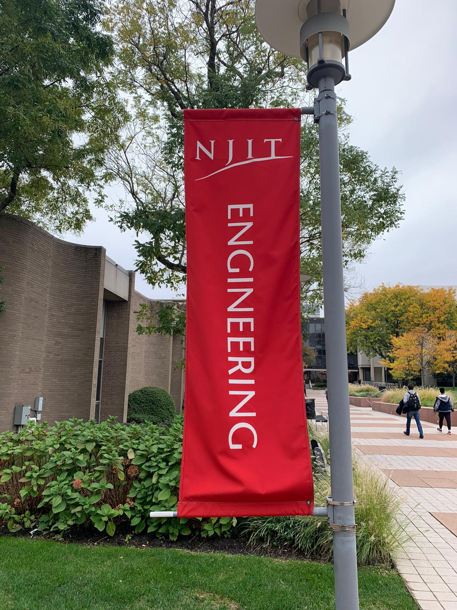

PROJECT NAME: BOLIDUS
This is a project made for the class "Sustainable Materials for the environment", the aim of this design was to revolutionize the toy industry. Almost 90% of the toy industry is Plastic, high amount of energy and chemicals are used to manufacture this toys, some plastics can endanger kids health if they eat it, a low percentage of the plastic toys are perfect cadidates for recycling, Recycling toys is always difficult due to a mix of materials in a same part and finally kids usually get tired of toys in a few days/weeks and they ask for new ones. These all are the reasons why I created this cork toy which has the following advantages: Cork is a perfect candidate cause: the cork tree accumulated CO2, more production more CO2 is absorbed, Its density is low and it makes the transport price low, it has great echanical properties. And finally is perfect for kids beacuse it is resistant to deterioration, almost odorless and tasteless, fire retardant, does not absorb dust, low permeability and excellent sound insulator
 


